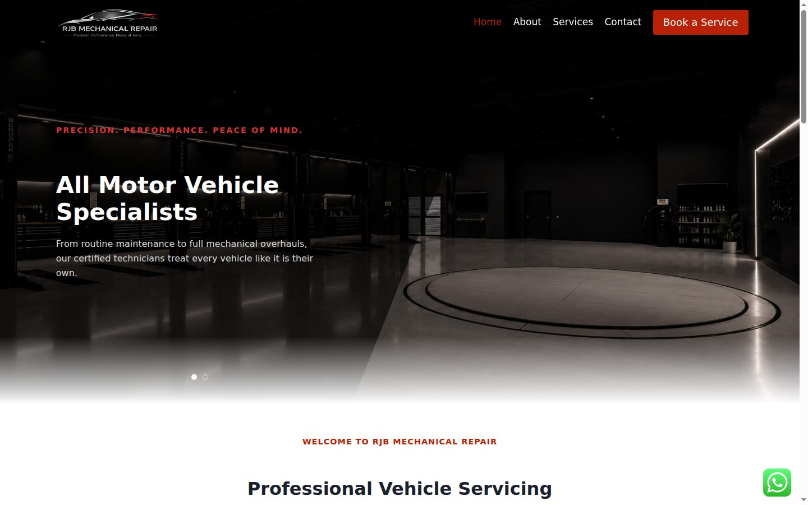

RJB Mechanical Repair
Website for a vehicle servicing and repair workshop specialising in Mercedes-Benz and other German brands. Dark, premium look with an animated hero, services grid and a clear "Book a Service" call to action.
WordPressElementorCustom animation plugin
Visit rjbmechanicalrepair.co.za →